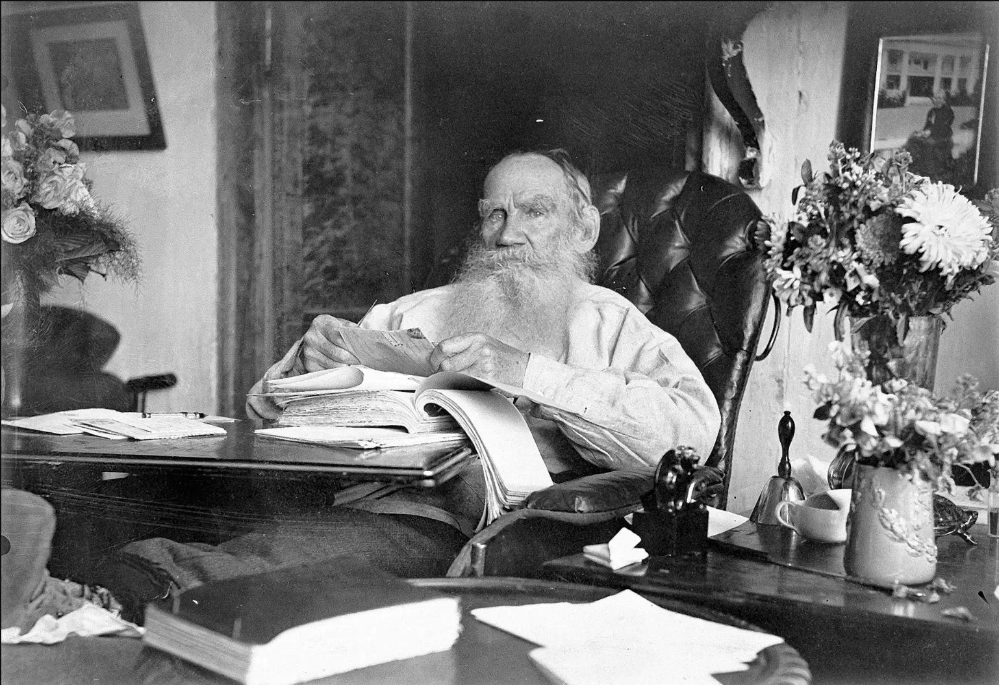

Leo Tolstoy, 1828-1910

Overview
Tolstoy is one of the greatest authors of all time.
The verisimilitude of his writing is such
that you forget you're even reading a book.
"If the world could write itself, it would write like Tolstoy." -Isaac Babel
Best Works, No Order
- Anna Karenina
- War and Peace
- The Death of Ivan Ilyich
Major Works, Chronological Order
- Sevastopol Sketches, 1855
- The Cossacks, 1863
- War and Peace, 1869
- Anna Karenina, 1877
- A Confession, 1882
- My Religion - What I Believe, 1885
- The Death of Ivan Ilyich, 1886
- The Kreutzer Sonata, 1889
- The Kingdom of God Is Within You, 1894